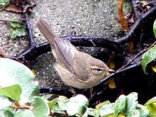
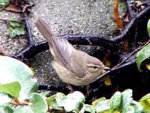

| Dusky Warbler | |
|---|---|
|  | |
| Conservation status | |
| Binomial name | |
| Phylloscopus fuscatus (Blyth, 1842) |
| Dusky Warbler | |
|---|---|
|  | |
| Conservation status | |
| Binomial name | |
| Phylloscopus fuscatus (Blyth, 1842) |
The Dusky Warbler, Phylloscopus fuscatus, is a leaf warbler which breeds in east Asia. This warbler is strongly migratory and winters in southeast Asia. It has a foothold in North America in Alaska, and has also occurred in California
This is an abundant bird of taiga bogs and wet meadows. The nest is built low in a bush, and 5-6 eggs are laid. Like most Old World warblers, this small passerine is insectivorous.
This small warbler is prone to vagrancy as far as western Europe in October, despite a 3000 km distance from its breeding grounds. It has wintered in Great Britain.
This is a warbler similar in size and shape to a Chiffchaff. The adult has an unstreaked brown back and buff underparts. There is a prominent whitish supercilium, and the bill is fine and pointed. The sexes are identical, as with most warblers, but young birds are more olive-tinged above. Like most warblers, it is insectivorous, but will take other small food items including berries.
The song is a monotonous whistle, and the call is a harsh check. The call is often the first clue that this typically skulking species is present, away from the breeding grounds.

{kind=link}